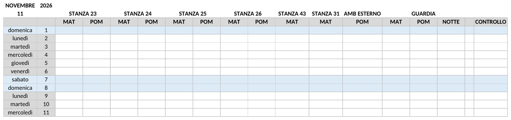
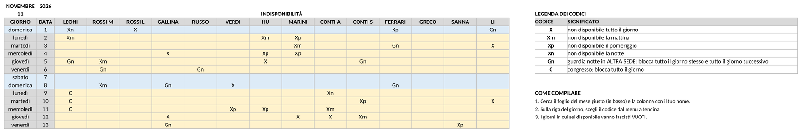
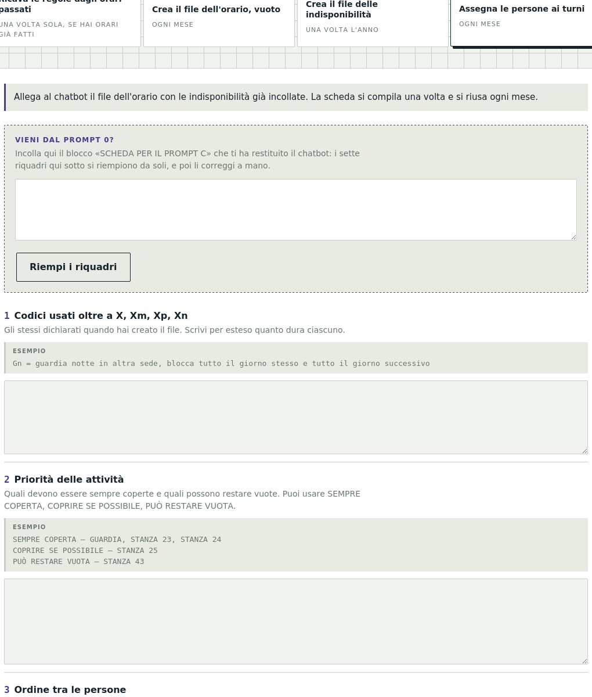
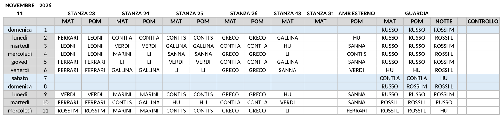
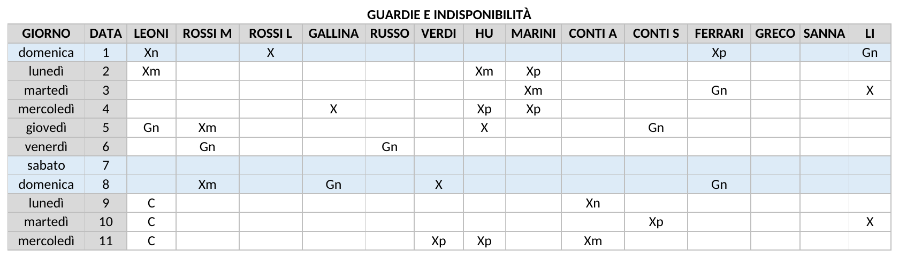
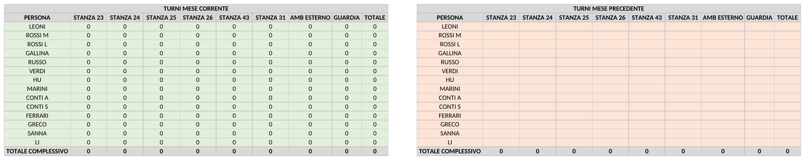
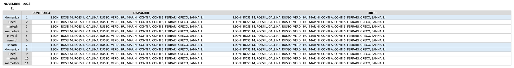
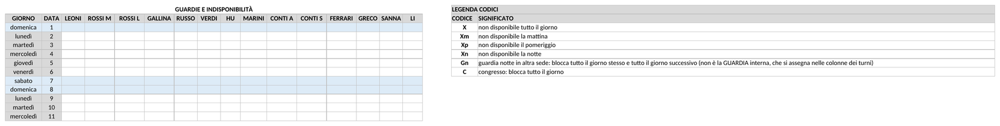
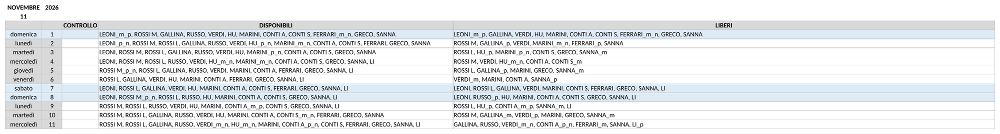
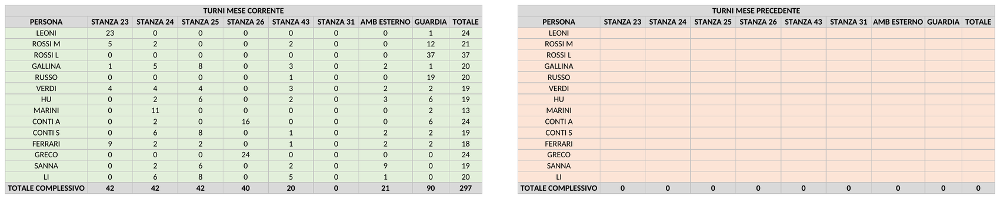

I chatbot come Claude, ChatGPT e Gemini, anche nelle versioni gratuite, possono essere utilizzati per organizzare e assegnare i turni di un orario per i più vari tipi di attività: un reparto ospedaliero con ambulatori, un centro sportivo, una scuola, un negozio, o anche una suddivisione di nonni e babysitter nella gestione dei nipoti.
Scrivere in modo efficace le istruzioni per il chatbot, chiamate prompt, può essere lungo e complicato.
Questa pagina è pensata per facilitare questo processo: è sufficiente inserire a parole poche caratteristiche dell'orario desiderato — nomi del personale, indisponibilità, attività da assegnare e regole da seguire nella compilazione dei turni — per creare comandi pronti da copiare nei chatbot e ottenere l'orario con i turni compilati secondo l'organizzazione, le regole e le indisponibilità indicate.
Se ti servissero caratteristiche non previste da queste istruzioni, potrai aggiungerle dialogando con il chatbot una volta creato l'orario, oppure inserire manualmente i turni non prevedibili sull'Excel creato.

1 Crea il file Excel con i turni vuoti
2 Crea il file Excel per raccogliere le indisponibilità
3 Indica le regole per compilare i turni
4 Fai compilare i turni dell'orarioAllora non devi scrivere le regole a mano. Copia il testo qui sotto, mandalo al chatbot in una conversazione nuova allegando quegli orari — almeno tre, meglio cinque o sei — e lui te le ricava. Poi incolla la sua risposta nel campo qui accanto: i sette riquadri si riempiono da soli e ti resta solo da correggerli.
Incolla qui la risposta che ti ha dato:
Quando il personale ha compilato le indisponibilità, copia le colonne delle indisponibilità nel blocco dedicato dentro il file Excel dell'orario vuoto.

Allega il file con le indisponibilità inserite al chatbot — Claude, ChatGPT o Gemini.
Incolla nel chatbot il comando generato da «Indica le regole per compilare i turni».
Otterrai il file Excel dell'orario con i turni compilati.
Dal mese successivo al primo:
Si rigenera il file dell'orario eseguendo di nuovo il comando di «Crea il file Excel con i turni vuoti», cambiando solo il nome del mese: è la prima riga del blocco DATI DA COMPILARE.
Quando il personale ha compilato le indisponibilità, copiale nel file Excel dell'orario vuoto, allegalo al chatbot e incolla il testo di «Indica le regole per compilare i turni» che hai salvato. Se non lo trovi più, puoi ricompilare i riquadri come il mese precedente.
Se vuoi tenere conto dei turni assegnati nel mese precedente, riporta il carico del mese appena chiuso: apri il file del mese scorso, seleziona il blocco TURNI MESE CORRENTE, copialo e incollalo — con incolla speciale > valori — nel blocco TURNI MESE PRECEDENTE del file nuovo. I due blocchi hanno le stesse colonne nello stesso ordine, quindi è un copia-incolla solo. Il primo mese non c'è niente da riportare, perché non c'è un mese precedente compilato.

L'incolla speciale > valori non è un dettaglio: con un incolla normale si copiano anche le formule, e il blocco del mese precedente comincia a ricalcolarsi sul mese in corso, mostrando due colonne di numeri identici.
Tutti gli esempi di questa pagina raccontano lo stesso reparto finto, così che si possano confrontare fra loro. Qui sotto trovi com'è fatto, come si compilano le tre schede e che file ne esce.
Le 8 attività da coprire
| Attività | Turni al giorno |
|---|---|
| STANZA 23 | MAT, POM |
| STANZA 24 | MAT, POM |
| STANZA 25 | MAT, POM |
| STANZA 26 | MAT, POM |
| STANZA 43 | solo MAT |
| STANZA 31 | solo MAT |
| AMB ESTERNO | solo POM |
| GUARDIA | MAT, POM, NOTTE |
Le 14 persone: LEONI, ROSSI M, ROSSI L, GALLINA, RUSSO, VERDI, HU, MARINI, CONTI A, CONTI S, FERRARI, GRECO, SANNA, LI.
I 2 codici aggiuntivi, oltre ai quattro di base
(X = non disponibile tutto il giorno, Xm la
mattina, Xp il pomeriggio, Xn la notte):
Gn = guardia notte in ALTRA SEDE, blocca tutto il
giorno stesso e tutto il giorno successivoC = congresso, blocca tutto il giorno1. Mese e anno del file
novembre 20262. Attività da coprire
STANZA 23 - 2 turni: MAT, POM
STANZA 24 - 2 turni: MAT, POM
STANZA 25 - 2 turni: MAT, POM
STANZA 26 - 2 turni: MAT, POM
STANZA 43 - 1 turno: MAT
STANZA 31 - 1 turno: MAT
AMB ESTERNO - 1 turno: POM
GUARDIA - 3 turni: MAT, POM, NOTTE3. Nomi delle persone
LEONI, ROSSI M, ROSSI L, GALLINA, RUSSO, VERDI, HU, MARINI, CONTI A,
CONTI S, FERRARI, GRECO, SANNA, LI4. Codici di indisponibilità oltre a X, Xm, Xp, Xn
Gn = guardia notte in ALTRA SEDE, blocca tutto il giorno stesso e tutto
il giorno successivo. È una notte svolta da un'altra struttura, che
mi arriva già decisa: non è la GUARDIA del punto 2, che è un turno
interno che assegno io.
C = congresso, blocca tutto il giornoDue cose da notare. Le attività hanno un numero di turni diverso
l'una dall'altra: quattro con mattina e pomeriggio, due con la sola
mattina, una con il solo pomeriggio, una con tre turni compresa la
notte. E la guardia compare due volte, ed è voluto: GUARDIA
al punto 2 è il turno interno che assegni tu, Gn al punto 4
è una notte svolta in un'altra sede, che ti arriva già decisa. Sono due
cose distinte e non vanno unificate.
Il file che ne esce, nelle sue quattro parti:


1. Mese e anno da cui partire
novembre 20262. Quanti mesi
123. Nomi delle persone
LEONI, ROSSI M, ROSSI L, GALLINA, RUSSO, VERDI, HU, MARINI, CONTI A,
CONTI S, FERRARI, GRECO, SANNA, LI4. Codici di indisponibilità
Gn = guardia notte in ALTRA SEDE, blocca tutto il giorno stesso e tutto
il giorno successivo
C = congresso, blocca tutto il giornoNomi e codici sono identici a quelli del primo riquadro, parola per parola: è la condizione perché le colonne si incollino al posto giusto e perché nessun codice resti senza significato.
Il file che ne esce, un foglio per ogni mese:
1. Codici usati oltre a X, Xm, Xp, Xn
Gn = guardia notte in ALTRA SEDE, blocca tutto il giorno stesso e tutto
il giorno successivo: non è la GUARDIA che assegni tu nelle colonne
dei turni.
C = congresso, blocca tutto il giorno2. Priorità delle attività
SEMPRE COPERTA - GUARDIA, in tutti e tre i turni
SEMPRE COPERTA - STANZA 23, STANZA 24, STANZA 25, STANZA 26
PUÒ RESTARE VUOTA - STANZA 43, STANZA 31, AMB ESTERNO: coprirle solo se
avanza qualcuno, senza forzare i turni3. Ordine tra le persone
PRIMA DISPONIBILE - per STANZA 23: 1° LEONI, 2° ROSSI M, 3° FERRARI,
4° VERDI, 5° GALLINA
PRIMA DISPONIBILE - per GUARDIA: 1° ROSSI L, 2° ROSSI M, 3° RUSSO,
4° HU, 5° CONTI A, 6° GRECO
A PARITÀ - per tutte le altre attività nessuna preferenza: conta solo
l'equilibrio4. Turni fissi ricorrenti
SANNA: ogni martedì e ogni giovedì pomeriggio in AMB ESTERNO
LI: ogni mercoledì mattina in STANZA 43
MARINI: lavora SOLO il lunedì e il mercoledì; negli altri giorni non va
assegnato a niente, nemmeno per coprire un'attività prioritaria5. Esclusioni e incompatibilità
ESCLUSIONE - LI non va mai in GUARDIA
ESCLUSIONE - SANNA non va mai in GUARDIA, turno NOTTE
ESCLUSIONE - GRECO va solo in STANZA 26, mai fuori
ESCLUSIONE - in STANZA 26 vanno solo GRECO e CONTI A, nessun altro
INCOMPATIBILITÀ - ROSSI L e ROSSI M mai in contemporanea tra STANZA 23 e
STANZA 24: è lo stesso locale, nelle altre stanze possono stare
insieme6. Attività o giorni da lasciare vuoti
CHIUSI - sabato e domenica gli ambulatori sono chiusi: coprire SOLO la
GUARDIA, tutte le stanze e l'AMB ESTERNO restano vuoti
LI COMPILO IO - STANZA 31: lascia le celle vuote e non assegnare nessuno7. Limiti al numero di turni per persona
MAI OLTRE - nessuno più di 4 turni di NOTTE nel meseQuattro righe meritano attenzione.
SANNA non va mai in GUARDIA, turno NOTTE la esclude dalla
notte ma non dalla guardia di giorno: è la forma per limitare
un'esclusione a un solo turno. GRECO va solo in STANZA 26 e
in STANZA 26 vanno solo GRECO e CONTI A dicono due cose
diverse — la prima limita la persona, la seconda l'attività — e servono
entrambe. MARINI lavora SOLO il lunedì e il mercoledì è
scritto in forma azionabile: dire «di solito lavora il lunedì» non
produrrebbe nessun effetto. E il punto 6 sul weekend non va dato per
scontato: senza quella riga il chatbot copre tutte le attività anche
sabato e domenica.
Il risultato, con i nomi assegnati:


Se per motivi di privacy non vuoi caricare in una chat i nomi veri delle persone, puoi sostituirli con un codice: le iniziali, oppure una sigla progressiva che inventi tu — P01, P02, P03 e così via. I comandi funzionano allo stesso modo, perché per il chatbot i nomi sono soltanto etichette: quello che conta è che la stessa persona porti sempre la stessa sigla in tutti i comandi e in tutti i file.
Poi i nomi veri li rimetti tu, sul tuo computer, nel file Excel che hai scaricato. Non serve farlo a mano cella per cella: apri il file, premi Ctrl+H su Windows o Cmd+H su Mac, e nella finestra Sostituisci scrivi la sigla nel primo campo e il nome vero nel secondo, poi premi Sostituisci tutto. Ripeti per ogni persona: sono tanti passaggi quante sono le persone, ma ognuno sistema tutte le celle di quella persona in una volta sola, comprese le colonne dei conteggi.
Tieni la tabella che associa sigla e nome in un file separato, sul tuo computer, che non carichi da nessuna parte.
Tre avvertenze:
Il tasto «Svuota il modulo». Le risposte che scrivi nei riquadri restano salvate nella memoria del browser di questo computer, così il mese successivo le ritrovi già compilate e non devi riscriverle. Non vengono inviate a nessuno e non escono da qui. Se però stai usando un computer condiviso, o se hai finito e non vuoi lasciare in giro nomi e regole del tuo gruppo, premi Svuota il modulo: cancella tutte le risposte di tutte le sezioni, e la volta dopo ripartirai dai campi vuoti.
Infine, prima di caricare qualsiasi cosa, verifica le regole del tuo ente sull'uso di strumenti AI esterni: molte organizzazioni hanno una policy, e alcune mettono a disposizione strumenti interni da usare al posto di quelli pubblici.
Nel reparto di esempio la guardia compare due volte, e non è un errore: sono due cose diverse che capita spesso di avere insieme.
| GUARDIA | Gn | |
|---|---|---|
| Cos'è | il turno di guardia del reparto | una notte svolta in un'altra sede |
| Chi decide | tu, assegnando | qualcun altro; ti arriva già fatta |
| Dove va nella scheda | tra le attività | tra i codici |
| Chi la scrive nel file | il chatbot, nelle colonne dei turni | le persone, nella colonna indisponibilità |
La regola per capire dove va un impegno qualsiasi: se lo decidi tu è un'attività, se te lo comunicano è un codice di indisponibilità.
Quello che non si può fare è mettere la stessa guardia in tutti e due i punti: verrebbe contata due volte, una come turno da coprire e una come assenza. Se nel tuo gruppo la guardia è una sola, sta in un posto solo — quale dei due dipende da chi la decide.
Se invece sei come il reparto di esempio, con due guardie diverse, aggiungi al tuo prompt una riga che lo dica subito dopo la scheda, altrimenti un chatbot attento si ferma e ti chiede se non ti sei sbagliato:
Nel mio gruppo esistono DUE guardie diverse, ed è voluto: GUARDIA è un turno interno che assegni tu, Gn è una notte svolta in un'altra sede che mi arriva già decisa. Non unificarle e non spostare l'una nel punto dell'altra.
Nomina i codici in modo che la differenza si veda anche a distanza di
mesi: Gn = guardia notte altra sede si capisce,
Gn = guardia notte no — chi legge il file si chiede quale
delle due.
Chi monta di notte non lavora quel giorno — né la mattina né il pomeriggio — e non lavora il giorno dopo, quando smonta. Una notte costa quindi due giornate alla persona che la fa. Vale per entrambe le guardie, e in nessuno dei due casi lo scrive qualcuno a mano:
Gn sulla riga del 5 e basta. Il codice significa già "tutto
il 5 e tutto il 6", perché è così che l'hai descritto al punto 4.Conviene tenerne conto quando si guarda la capienza: 30 notti in un mese sono 60 mezze giornate che spariscono dalla disponibilità.
È anche il motivo per cui i codici vanno descritti per intero.
Gn = guardia notte non dice al chatbot quanto dura il
blocco;
Gn = guardia notte in altra sede, blocca tutto il giorno stesso e tutto il giorno successivo
sì. Un codice deve reggersi da solo, senza rimandare a un altro punto
della scheda: chi lo legge — il chatbot, ma anche un collega tra sei
mesi — deve capire cos'è e quanto dura leggendo solo quella riga.
La colonna LIBERI se ne accorge da sola in entrambi i casi: chi ha
Gn il 5, e chi è messo nella colonna NOTTE del 5, sparisce
dai liberi sia il 5 sia il 6. La colonna DISPONIBILI invece guarda solo
i codici e non le assegnazioni — è la sua funzione, dire chi c'è quel
giorno — quindi lì il 6 la persona compare ancora.
Un limite che resta: il primo giorno del mese non ha un ieri. Se qualcuno era di notte il 31 del mese scorso, quello devi ricordartelo tu.
Le versioni gratuite hanno un limite di messaggi o di elaborazioni, e a un certo punto ti dicono di riprovare più tardi. Non è un problema del metodo: è una pausa forzata. Ci sono due modi per aggirarla.
Cambia piattaforma. Claude, ChatGPT e Gemini hanno limiti separati e indipendenti. Se uno si blocca, apri un altro e riprendi da dove eri: i testi che incolli sono gli stessi e non dipendono da quale chatbot li riceve. Conviene tenere aperti due account fin dall'inizio, così non ti fermi a metà.
Per le sezioni A e B, salta il chatbot. Quelle due producono un programma, e un programma lo puoi eseguire da solo su Google Colab, che è gratuito, non ha limiti di questo tipo e non richiede di installare niente:
Per le sezioni 0 e C il chatbot serve davvero, perché lì il lavoro è di lettura e di giudizio: se sei bloccato, l'unica strada è cambiare piattaforma o aspettare.
Se il programma si ferma con un errore in Colab, copia l'ultima riga rossa e incollala in una chat: viene corretta quasi sempre al primo colpo. Se invece il messaggio comincia con «NON POSSO PROCEDERE», è il programma stesso che ti avvisa che una delle risposte non è scritta come si aspetta, e la spiegazione è nella riga successiva.
Una nota sulla privacy. Colab è un servizio Google, e il programma contiene i nomi delle persone. Se è un problema, usa delle sigle come spiegato Privacy e rimetti i nomi veri in Excel alla fine.
Questi sono i testi che il modulo compila al posto tuo, riportati per intero. Non serve leggerli per usare il metodo: chi si limita a riempire i campi della pagina non ne ha bisogno.
Servono in tre casi. Se vuoi controllare che cosa viene mandato
davvero al chatbot, prima di affidargli i nomi e gli orari delle
persone. Se preferisci compilare le schede a mano invece di usare il
modulo: le righe da riempire sono quelle che cominciano con
RISPOSTA:. E se vuoi adattare il metodo a un caso che qui
non è previsto, perché è da questi testi che si parte per
modificarlo.
Sono quattro, nell'ordine in cui si usano: i due script delle sezioni A e B, che creano i file Excel, e i due prompt delle sezioni 0 e C, che sono istruzioni a parole per il chatbot.
Sono due programmi Python. Non sono riportati qui perché ne esiste già una copia nel progetto, ed è quella la versione buona: incollarli anche in questa pagina significherebbe tenerne allineate due, e prima o poi una resterebbe indietro.
programmi/colab-A-orario.py
— crea il file dell'orario del mese, vuotoprogrammi/colab-B-indisponibilita.py
— crea il file delle indisponibilità su più mesiAprendoli su GitHub si leggono con i colori della sintassi e il
numero di riga, e in alto a destra c'è il pulsante per copiarli. I dati
da cambiare sono tutti in cima, nel blocco
DATI DA COMPILARE, fra le virgolette triple: il resto non
va toccato.
Da usare una volta sola, all'inizio, da chi ha almeno 3 orari già compilati. Non produce orari: produce la scheda da usare nel PROMPT C.
Cosa fartene del risultato. La risposta si chiude con un blocco intitolato SCHEDA PER IL PROMPT C: copialo e incollalo nella pagina di compilazione, nel campo «Risposta del PROMPT 0» della sezione C. I sette riquadri si riempiono da soli e li correggi lì. Prima di usarla leggi le sezioni CONTRADDIZIONI e NON DETERMINABILE: sono le cose che il chatbot non ha potuto dedurre e che devi decidere tu. La scheda corretta conservala: la riusi ogni mese, non si rifà.
Non c'è niente da compilare prima di inviarlo. La scheda in fondo va lasciata vuota: è il formato in cui il chatbot deve rispondere, non un modulo per te. Si allegano gli orari, si copia il blocco così com'è e si invia.
Ti allego alcuni orari di turno già compilati di mesi passati. Il tuo compito è
SOLO ANALIZZARLI. Non devi generare un orario nuovo, non devi correggerli e non devi
produrre nessun file.
Devi ricavare le regole implicite che spiegano le assegnazioni, e restituirmele nel
formato della SCHEDA che trovi in fondo, così che io possa correggerla e riusarla.
La SCHEDA in fondo è VUOTA di proposito: è il modulo che devi riempire TU con quello che
hai dedotto. Non è una domanda rivolta a me e non contiene dati che devi usare. Non
chiedermi di compilarla e non fermarti perché la trovi vuota: riempila e restituiscimela.
COME ANALIZZARE
1. Ricostruisci l'elenco delle persone e l'elenco delle attività (stanze, turni,
ambulatori) che compaiono nei file.
1bis. SEPARA LE PERSONE DALLE ETICHETTE. Nelle celle dei turni finiscono sia i cognomi sia
diciture che persone non sono: nomi di protocolli, liste di pazienti, sigle di attività.
Non puoi distinguerle dal testo, ma puoi da dove compaiono. Confronta i nomi che trovi
nelle celle dei turni con quelli del blocco delle indisponibilità: chi compare nei turni
ma NON ha una colonna nel blocco va messo in un elenco a parte. Non attribuirgli turni
fissi né esclusioni dentro la scheda: sono o etichette da mettere al punto 6, o
collaboratori esterni per cui devo decidere io.
MA ANALIZZALI COMUNQUE, con lo stesso metro degli altri. Per ciascuno riportami nella
sezione D-bis le stesse cose che scriveresti ai punti 4 e 5 se fosse una persona: turni
fissi ricorrenti con il conteggio dei mesi, attività in cui compare solo, giorni della
settimana in cui compare solo. Scrivile già pronte da incollare, così se decido che è una
persona del gruppo mi basta spostarle nei punti 4 e 5 senza rifare l'analisi. Se invece
decido che è un'etichetta, le cancello: costa meno buttarle che ricavarle di nuovo.
Se il blocco delle indisponibilità non c'è negli allegati, dimmelo e segnala che questa
distinzione non l'hai potuta fare.
2. Per ogni persona cerca:
- turni fissi ricorrenti (stessa attività, stesso giorno della settimana, ripetuti);
- attività in cui non compare MAI, pur essendo presente nel mese;
- il caso opposto: se compare sempre e SOLO in una attività, o in poche. È
l'informazione più utile di tutte, e va scritta così ("va solo in X") invece di
elencare le dieci attività in cui non compare;
- giorni o parti di giornata in cui non compare mai;
- il numero massimo di turni dello stesso tipo che ha fatto in un mese.
3. Per ogni coppia di persone cerca se non compaiono mai contemporaneamente nella stessa
attività o in attività che sembrano essere lo stesso locale.
4. Per ogni attività cerca:
- se resta mai scoperta, e quanto spesso: le attività mai scoperte sono le
prioritarie, quelle spesso vuote sono le facoltative;
- se è aperta solo in certi giorni o solo mattina/pomeriggio.
5. Guarda se chi lavora la mattina in un'attività tende a restarci anche il pomeriggio
oppure se i turni vengono spezzati per distribuire il carico. Non serve che tu ne
ricavi una regola: riferiscimelo tra le osservazioni, mi serve per capire quanto la
continuità contava finora.
REGOLE DELL'ANALISI — importanti
- Distingui la REGOLA dalla COINCIDENZA. Per ogni riga che scrivi indica su quanti
mesi su quanti si verifica, così: (3/3), (2/4).
- Non trattare come regola ciò che si verifica in meno della metà dei mesi: mettilo
invece nella sezione OSSERVAZIONI INCERTE.
- Segnala SEPARATAMENTE le eccezioni e le contraddizioni tra un mese e l'altro: sono
quasi sempre deroghe di emergenza, non regole, e devo deciderle io.
- Non inventare spiegazioni. Se un'assegnazione non ha una logica visibile, dillo.
- Non puoi vedere le indisponibilità di quei mesi: quindi non concludere mai che una
persona "non può" fare qualcosa solo perché non la fa. Scrivi "non compare mai in X"
e lascia a me stabilire se è un divieto o un caso.
COSA CONSEGNARMI, in quest'ordine
A. La scheda qui sotto precompilata con quello che hai dedotto.
B. OSSERVAZIONI INCERTE: le regolarità deboli, una per riga, con il conteggio.
C. CONTRADDIZIONI: i casi in cui un mese smentisce gli altri.
D. NON DETERMINABILE: l'elenco delle cose che dagli allegati non si possono sapere e
che devo compilare io a mano.
D-bis. NOMI SENZA COLONNA: l'elenco del punto 1bis, cioè i nomi che compaiono nelle celle
dei turni ma non hanno una colonna nel blocco delle indisponibilità. Per ciascuno dimmi
che non puoi stabilire se sia una persona o un'etichetta, e che devo deciderlo io. Sotto
ognuno metti però le righe già pronte per i punti 4 e 5 — turni fissi, attività
esclusive, giorni esclusivi, con i conteggi — così se decido che è una persona le sposto
nella scheda in un copia-incolla.
E. CARICO STORICO: per ciascuna persona il numero medio di turni al mese, e per i tipi
di turno più pesanti (guardie, notti, se presenti) il conteggio per persona mese
per mese. Mi serve per capire se il carico era equilibrato o no.
ESEMPIO DI COME DEVI RISPONDERE (dati finti, servono solo a mostrarti la forma:
NON usarli e non cercarli nei miei file)
A. SCHEDA
1) RISPOSTA: Gn = guardia notte, blocca tutto il giorno stesso e tutto
il giorno successivo (da confermare: nel file non c'è un
turno di notte, quindi non può bloccare solo la notte)
C = compare 14 volte, sempre su giornate intere: blocca
tutto il giorno (da confermare, il significato non si ricava)
2) RISPOSTA: SEMPRE COPERTA — GUARDIA, in tutti e tre i turni (3/3)
SEMPRE COPERTA — STANZA 23, STANZA 24 (3/3)
SEMPRE COPERTA — STANZA 25, STANZA 26 (3/3 la mattina,
2/3 il pomeriggio: le metto qui, ma confermami il pomeriggio)
COPRIRE SE POSSIBILE — STANZA 43, AMB ESTERNO: in media 8
giorni coperti su 30 (3/3)
PUÒ RESTARE VUOTA — STANZA 31: non risulta mai coperta (3/3)
3) RISPOSTA: PRIMA DISPONIBILE — per STANZA 23: LEONI, poi FERRARI.
LEONI c'è in 26 giorni su 30 e in 25 di quelli è in
STANZA 23 (3/3): non sembra una tendenza, sembra una regola
A PARITÀ — per GUARDIA: ROSSI L, RUSSO, HU. Si alternano
senza uno schema fisso, la marco A PARITÀ
A PARITÀ — per tutte le altre attività nessuna preferenza
visibile
4) RISPOSTA: SANNA: ogni martedì e giovedì pomeriggio in AMB ESTERNO (3/3)
LI: ogni mercoledì mattina in STANZA 43 (3/3)
MARINI: lavora SOLO il lunedì e il mercoledì; negli altri
giorni non va assegnato a niente (3/3). Non so se sia un
part-time, un'indisponibilità ricorrente o altro: dimmelo tu
5) RISPOSTA: ESCLUSIONE — GRECO va solo in STANZA 26, mai altrove (3/3).
L'ho scritta così invece di elencare le sette attività in
cui non compare
ESCLUSIONE — in STANZA 26 vanno solo GRECO e CONTI A,
nessun altro (3/3)
ESCLUSIONE — LI e SANNA non compaiono mai in GUARDIA (3/3)
INCOMPATIBILITÀ — ROSSI L e ROSSI M non compaiono mai lo
stesso giorno tra STANZA 23 e STANZA 24 (3/3), ma stanno
insieme nelle altre stanze: sembra un vincolo di locale,
confermami
6) RISPOSTA: CHIUSI — sabato e domenica nessun turno assegnato in
nessun mese (3/3): è regolare, sembra una chiusura
NON SO — STANZA 31: sempre vuota, ma non capisco se sia
chiusa, se la compili tu a mano o se non riuscite a
coprirla. Decidi tu quale delle tre
7) RISPOSTA: nessun limite visibile. Il massimo raggiunto da qualcuno è
5 turni di NOTTE in un mese (CONTI S, a marzo); se è un
tetto, scrivilo tu come MAI OLTRE
B. OSSERVAZIONI INCERTE
VERDI sembra evitare il venerdì pomeriggio (2/4) — sotto la metà, non lo
tratto come regola
La continuità mattina/pomeriggio è al 55% a marzo e al 71% a maggio:
in crescita, ma non abbastanza stabile per chiamarla regola
C. CONTRADDIZIONI
Ad aprile SANNA compare una volta in GUARDIA, contro gli altri due mesi
A maggio STANZA 43 è coperta il sabato, unico caso in tre mesi
D-bis. NOMI SENZA COLONNA
PROT SALA e LISTA B: sempre in STANZA 24, sempre il martedì (3/3), mai
altrove. Non hanno una colonna nel blocco indisponibilità e il nome
sembra quello di un protocollo, non di una persona: decidi tu
se sono etichette -> punto 6: STANZA 24 il martedì la compilo io
se sono persone -> punto 4: PROT SALA e LISTA B ogni martedì in
STANZA 24
CONTI A: 7-8 turni al mese, sempre in STANZA 26, mai altrove (3/3), e
ogni giovedì mattina (3/3). Non ha una colonna nel blocco: sembra una
persona ma esterna al gruppo, decidi tu
se è una persona -> punto 4: CONTI A ogni giovedì mattina in STANZA 26
punto 5: ESCLUSIONE — CONTI A va solo in STANZA 26
e va aggiunta la sua colonna nel file dell'orario
se non lo è -> punto 6: STANZA 26 il giovedì la compilo io
D. NON DETERMINABILE
I codici di indisponibilità: negli allegati non c'è il blocco
Se STANZA 31 sia chiusa, compilata a mano o solo scoperta
Se le esclusioni siano divieti o competenze specifiche
Se MARINI sia part-time o abbia un'indisponibilità fissa
E. CARICO STORICO
LEONI 26 turni/mese di media, CONTI A 24, GRECO 23 ... FERRARI 11,
SANNA 9. I primi tre fanno più del doppio degli ultimi due, in tutti
e tre i mesi: non è un mese storto
NOTTI: CONTI S 5-3-4, ROSSI L 3-4-3, RUSSO 2-3-3, gli altri 0-2
+---------------------------------------------------------------+
| SCHEDA DA RESTITUIRE COMPILATA — la riempi tu, chatbot, con |
| quello che hai dedotto. Scrivi dopo i due punti, sulla stessa |
| riga. Non cancellare i numeri. |
+---------------------------------------------------------------+
1) Codici di indisponibilità usati oltre a X, Xm, Xp, Xn: significato e
parte della giornata bloccata.
PROPONI SEMPRE UNA DURATA, anche quando non sei sicuro: scrivi la tua
ipotesi e marcala "(da confermare)". Non lasciare mai un codice senza
durata e non scrivere solo "significato non determinabile": un codice
senza durata non blocca nessuno, quindi a valle la persona risulterà
disponibile quando non lo è, e nessuno se ne accorgerà. Una durata
sbagliata invece la vedo e la correggo.
Attenzione ai codici notturni: se il file NON ha un turno di notte tra
le attività, un codice di guardia notturna non può bloccare "la notte",
perché la notte non esiste in quel file. Propone di norma: blocca tutto
il giorno stesso e tutto il giorno successivo.
RISPOSTA:
2) Priorità delle attività. Classifica OGNI attività in una di queste tre
categorie, usando esattamente queste parole e nient'altro:
SEMPRE COPERTA ....... non resta mai vuota in nessuna mezza giornata
COPRIRE SE POSSIBILE . si copre quando c'è personale, ma può saltare
PUÒ RESTARE VUOTA .... non va coperta forzando i turni
Non usare formule come "priorità alta" o "intermedia": a valle non
significano niente, perché le categorie sono solo queste tre. Se dai
file non capisci in quale categoria sta un'attività, mettila in
PUÒ RESTARE VUOTA e segnalamelo al punto D.
RISPOSTA:
3) Ordine tra le persone, una riga per attività. Marca ogni riga con
PRIMA DISPONIBILE (se dai file sembra che quell'attività la faccia
sempre la stessa persona quando c'è) oppure A PARITÀ (se sembra
solo una tendenza a parità di carico). Nel dubbio usa A PARITÀ e
dimmelo: è la scelta meno invasiva.
RISPOSTA:
4) Turni fissi ricorrenti: chi, quando, dove. Uno per riga.
Se una persona compare SOLO in certi giorni della settimana e mai negli
altri, non scrivere "ricorre spesso il lunedì": scrivi la regola in
forma azionabile, cioè "lavora SOLO il lunedì e il mercoledì; negli
altri giorni non va assegnata a niente". La prima è un'osservazione e a
valle non produce nessun effetto; la seconda è un vincolo che il prompt
di assegnazione sa applicare. Aggiungi tra parentesi che non sai se sia
part-time, indisponibilità fissa o altro: lo decido io.
RISPOSTA:
5) Esclusioni e incompatibilità, una per riga, ciascuna marcata con
ESCLUSIONE oppure INCOMPATIBILITÀ.
ESCLUSIONE ha tre forme, scegli quella che i file suggeriscono:
"TIZIO non va mai in ATTIVITÀ", "TIZIO va solo in ATTIVITÀ, mai
fuori", "in ATTIVITÀ vanno solo TIZIO e CAIO, nessun altro".
La seconda e la terza forma sono importanti: se una persona compare
sempre e solo in un posto, non scrivere l'elenco di tutto quello che
non fa — scrivi che va solo lì.
INCOMPATIBILITÀ: due persone mai contemporaneamente, indicando in
quali attività.
RISPOSTA:
6) Attività o giorni sempre vuoti negli orari che hai letto. Marca
ogni riga con una di queste tre parole, così la scheda è già pronta
per il prompt di assegnazione:
CHIUSI ....... sempre vuoti negli stessi giorni, in modo regolare
LI COMPILO IO vuoti nell'orario ma con un motivo che non vedi
NON SO ....... vuoti in modo irregolare: potrebbe essere una
copertura non riuscita. Dillo e lascia decidere a me
RISPOSTA:
7) Limiti al numero di turni per persona. Dagli orari passati un limite
non si vede quasi mai: quello che puoi darmi è il MASSIMO raggiunto
da qualcuno, che è il punto di partenza per fissarlo. Scrivilo così:
"il massimo raggiunto è N turni di X in un mese (chi, quale mese)".
Se ti sembra che ci sia un tetto rispettato da tutti, dimmelo e
marcalo MAI OLTRE; altrimenti scrivi che non c'è.
RISPOSTA:
+------------------------ FINE SCHEDA ------------------------+
DOPO TUTTO IL RESTO, RIPETI LA SCHEDA IN QUESTO FORMATO COMPATTO
Serve a me per incollarla nel prompt di assegnazione senza doverla ricopiare a mano, quindi
rispetta il formato alla lettera: le due righe di apertura e chiusura scritte identiche, e
ogni risposta introdotta da una parentesi quadra con il numero. Dentro le parentesi va solo
il numero. Il testo può andare a capo quante volte serve: finisce quando comincia la
parentesi successiva.
Riporta le stesse risposte della scheda qui sopra, senza i conteggi tra parentesi tipo (3/5)
e senza commenti: qui servono le regole nude, pronte da usare. Le incertezze restano nelle
sezioni B, C e D, che leggo a parte.
=== SCHEDA PER IL PROMPT C ===
[1] i codici, uno per riga
[2] la priorità delle attività
[3] gli ordini tra le persone
[4] i turni fissi
[5] le esclusioni e le incompatibilità
[6] le attività e i giorni da lasciare vuoti
[7] i limiti al numero di turni
=== FINE SCHEDA PER IL PROMPT C ===
CHIUDI LA RISPOSTA CON QUESTA RIGA, scritta esattamente così:
"Copia il blocco SCHEDA PER IL PROMPT C qui sopra e incollalo nella pagina
di compilazione, nel campo che chiede la risposta del PROMPT 0: i sette
riquadri della sezione C si riempiranno da soli e potrai correggerli lì.
Prima di usarla, controlla le sezioni CONTRADDIZIONI e NON DETERMINABILE:
quello che c'è scritto lì non l'ho potuto dedurre e va deciso da te."Da usare quando il file è pronto e le indisponibilità sono state incollate. È la parte che richiede più precisione: i punti 2, 4, 5 e 7 della scheda sono il cuore.
Ti allego il file di turnistica con le indisponibilità già inserite. Devi assegnare le
persone ai turni, scrivendo i nomi nelle celle delle attività.
I codici di base nel blocco disponibilità sono sempre questi cinque:
X = non disponibile tutto il giorno
Xm = non disponibile la mattina, e quindi nemmeno in un turno GIORNO
Xp = non disponibile il pomeriggio, e quindi nemmeno in un turno GIORNO
Xg = non disponibile di giorno, cioè mattina e pomeriggio: la notte resta disponibile
Xn = non disponibile la notte
Ogni codice rende la persona NON assegnabile in qualcosa: non ci sono codici puramente
informativi. Ma ci sono due tipi di codice, e vanno trattati in modo diverso.
I cinque codici di base bloccano una PARTE DELLA GIORNATA, come scritto qui sopra.
I codici dichiarati al punto 1 della scheda bloccano invece UNA SOLA ATTIVITÀ, nel giorno
in cui sono scritti. Chi li ha resta assegnabile a tutte le altre attività di quel giorno,
in tutti i turni: l'unica cosa che non può fare è l'attività nominata nel codice. Per
esempio, un codice descritto come "indisponibile per il turno GUARDIA quel giorno" toglie
quella persona dalla GUARDIA di quel giorno e da nient'altro.
Le colonne DISPONIBILI e LIBERI non vedono questo secondo tipo di codice, ed è voluto: chi
lo ha compare fra i disponibili come tutti gli altri, perché per ogni altra attività lo è
davvero. Quel vincolo lo applichi solo tu, leggendo il blocco delle indisponibilità. Non
segnalarmelo come incoerenza del file.
Tutti i dati che ti servono sono nella SCHEDA qui sotto. Se una regola è ambigua o entra
in conflitto con un'altra in un modo che la scala dei conflitti non risolve, FERMATI e
chiedimi chiarimenti prima di generare il file.
PRIMA DI ASSEGNARE, fai questi due controlli veloci e riferimeli in una riga ciascuno:
- Ci sono giorni in cui le persone disponibili non bastano a coprire le attività del
punto 2 della scheda? Elencali. Se ce ne sono, dimmelo e aspetta una mia risposta prima
di procedere: probabile che manchi una compilazione o che serva una deroga.
- C'è qualche persona che risulta senza alcuna indisponibilità per l'intero mese? Può
essere vero, ma più spesso significa che non ha compilato. Chiedimelo invece di darlo
per scontato.
- Le regole della scheda si contraddicono fra loro? Confronta i punti 3, 4 e 5: un nome
che compare in un ordine PRIMA DISPONIBILE o A PARITÀ per un'attività, oppure in un
turno fisso, ma che al punto 5 risulta escluso da quella stessa attività, è quasi
sempre un errore di scrittura. La scala dei conflitti lo risolverebbe da sola, perché
l'esclusione sta più in alto, ma il risultato sarebbe un orario che non somiglia a
quello che mi aspetto. Elencami queste contraddizioni e ASPETTA una mia risposta
prima di procedere.
Se il file contiene un blocco TURNI MESE PRECEDENTE compilato, leggilo e usalo come SALDO
DI PARTENZA per l'equilibrio: chi il mese scorso è stato più caricato va scelto per ultimo
a parità di condizioni, chi lo è stato meno va scelto per primo. Vale sia sul totale sia
sulla singola attività: chi ha fatto molti turni in una certa attività va alleggerito
proprio su quella. Se il blocco è vuoto, parti da zero e dimmelo in una riga.
+---------------------------------------------------------------+
| SCHEDA — scrivi la risposta dopo i due punti, sulla stessa |
| riga. Non cancellare i numeri: servono al chatbot. |
+---------------------------------------------------------------+
Delle risposte contano solo queste parole scritte in maiuscolo:
SEMPRE COPERTA, COPRIRE SE POSSIBILE, PUÒ RESTARE VUOTA, PRIMA DISPONIBILE,
A PARITÀ, ESCLUSIONE, INCOMPATIBILITÀ, CHIUSI, LI COMPILO IO, MAI OLTRE,
POSSIBILMENTE ENTRO. Vanno scritte esattamente così, perché è da lì che si
capisce di che tipo di regola si tratta. Il resto della riga è testo libero:
basta che sia chiaro.
1) Codici usati oltre ai cinque di base: per ognuno il significato e QUALE ATTIVITÀ
blocca nel giorno in cui è scritto. Il nome dell'attività è scritto dentro la
descrizione e coincide con una delle attività delle colonne dei turni.
Questi codici non bloccano orari: per quelli bastano i cinque di base.
(Se non ce ne sono scrivi: nessuno)
RISPOSTA:
2) Priorità delle attività, dalla più alta alla più bassa: quali devono
essere sempre coperte e quali si possono lasciare vuote. Puoi scriverlo
a parole tue, oppure marcare ogni riga con SEMPRE COPERTA,
COPRIRE SE POSSIBILE o PUÒ RESTARE VUOTA: sono le stesse tre categorie
che usa il prompt di estrazione, così una scheda ricavata da lì si
incolla qui senza ritocchi.
RISPOSTA:
3) Ordine tra le persone. Comincia ogni riga con una di queste due
parole:
PRIMA DISPONIBILE .. vincolante: l'elenco è una graduatoria, il primo
nome è la prima scelta, il secondo la seconda e
così via. Quell'attività la fa il primo
dell'elenco che è libero quel giorno, anche se
ha già più turni degli altri. Se non è libero,
la fa il secondo, e così via lungo l'elenco.
Aspettati che i primi dell'elenco lavorino
molto in quell'attività e poco altrove: se non
è quello che vuoi, mettici accanto un limite
POSSIBILMENTE ENTRO al punto 7.
A PARITÀ ........... indicativo: l'ordine serve solo a scegliere
tra persone che hanno lo stesso numero di
turni. Conta prima l'equilibrio.
Una riga per ogni attività o turno che ha un suo ordine, più una riga
per tutto il resto. Anche qui l'ordine si può restringere a certi turni
di un'attività, scrivendo per esempio "per GUARDIA, turni MAT e POM".
(Se non ce ne sono scrivi: nessuno)
RISPOSTA:
4) Turni fissi ricorrenti: chi, quando, dove. Uno per riga.
RISPOSTA:
5) Due cose diverse, una per riga. Comincia ogni riga con una di
queste due parole:
ESCLUSIONE ......... limita chi va dove. Tre forme, usa quella che
ti serve e scrivila per esteso:
- "TIZIO non va mai in ATTIVITÀ"
- "TIZIO va solo in ATTIVITÀ, mai fuori"
- "in ATTIVITÀ vanno solo TIZIO e CAIO,
nessun altro"
Ognuna delle tre si può restringere a UN SOLO
turno dell'attività, aggiungendo "turno X":
"TIZIO non va mai in GUARDIA, turno NOTTE"
significa che TIZIO la guardia la fa, ma solo
di mattina e di pomeriggio. Se il turno non lo
scrivo, l'esclusione vale per tutti i turni di
quell'attività.
INCOMPATIBILITÀ .... due persone che non devono trovarsi
contemporaneamente nello stesso gruppo di
attività. Scrivi QUALI attività: fuori da
quelle possono stare contemporaneamente.
(Se non ce ne sono scrivi: nessuno)
RISPOSTA:
6) Attività o giorni da lasciare vuoti, perché sono chiusi oppure
perché li compilo io a mano. Scrivi quale dei due, così so se posso
coprirli in caso di necessità o se non devo toccarli. Se invece
l'orario ti serve tutti i giorni, weekend compreso e per tutte le
attività, scrivi: nessuno.
RISPOSTA:
7) Limiti al numero di turni per persona nel mese. Comincia ogni riga
con una di queste due parole:
MAI OLTRE .......... limite invalicabile: se rispettarlo obbliga a
lasciare scoperta un'attività, lascia scoperto
e segnalamelo.
POSSIBILMENTE ENTRO obiettivo: chi è sotto viene scelto prima di chi
è sopra, ma se è l'unico modo per coprire
un'attività prioritaria, superalo e segnalamelo.
(Se non ce ne sono scrivi: nessuno)
RISPOSTA:
+------------------------ FINE SCHEDA ------------------------+
ESEMPIO DI SCHEDA COMPILATA, TUTTI I PUNTI
(ti mostra come si risponde: NON usare questi dati)
1) RISPOSTA: Gn = guardia notte in ALTRA SEDE, blocca tutto il giorno
stesso e tutto il giorno successivo. È una notte svolta
da un'altra struttura, che mi arriva già decisa: non è
la GUARDIA che assegni tu nelle colonne dei turni.
C = congresso, blocca tutto il giorno
2) RISPOSTA: GUARDIA sempre coperta, priorità assoluta
poi in quest'ordine: STANZA 23, STANZA 24, STANZA 25,
STANZA 26
STANZA 43, STANZA 31 e AMB ESTERNO solo se avanza qualcuno:
possono restare vuote e non vanno coperte forzando i turni
3) RISPOSTA: PRIMA DISPONIBILE — per STANZA 23: LEONI, ROSSI M,
FERRARI, VERDI, GALLINA
PRIMA DISPONIBILE — per GUARDIA: ROSSI L, ROSSI M, RUSSO,
HU, CONTI A, GRECO
A PARITÀ — per tutte le altre attività nessuna preferenza:
conta solo l'equilibrio
4) RISPOSTA: SANNA: ogni martedì e ogni giovedì pomeriggio in AMB ESTERNO
LI: ogni mercoledì mattina in STANZA 43
5) RISPOSTA: ESCLUSIONE — LI non va mai in GUARDIA
ESCLUSIONE — SANNA non va mai in GUARDIA
ESCLUSIONE — in AMB ESTERNO vanno solo SANNA e GRECO,
nessun altro
INCOMPATIBILITÀ — ROSSI L e ROSSI M mai in contemporanea
tra STANZA 23 e STANZA 24 (è lo stesso locale;
nelle altre stanze possono stare contemporaneamente)
6) RISPOSTA: sabato e domenica gli ambulatori sono chiusi: coprire SOLO
la GUARDIA (MAT, POM e NOTTE), tutte le stanze e
l'AMB ESTERNO restano vuoti
7) RISPOSTA: MAI OLTRE — nessuno più di 4 turni di NOTTE nel mese
(colonna NOTTE della GUARDIA)
Come leggere l'esempio, punto per punto:
- il punto 1 riporta gli stessi codici dichiarati quando è stato generato il file: se qui
ne manca uno, quel codice viene ignorato e la persona risulta assegnabile quando non lo è.
Qui la GUARDIA non compare, ed è giusto: è un'attività, non un codice, e sta al punto 2;
- il punto 2 distingue le attività che non possono mai restare scoperte da quelle che sì:
è la distinzione su cui si regge tutta la scala dei conflitti. Dire esplicitamente che
STANZA 43, STANZA 31 e AMB ESTERNO possono restare vuote evita che il chatbot le copra
togliendo persone alle stanze prioritarie;
- il punto 3 distingue due cose molto diverse. PRIMA DISPONIBILE è vincolante: quella
stanza la fa il primo dell'elenco che è libero quel giorno, anche se ha già più turni
degli altri. A PARITÀ è indicativo: conta prima l'equilibrio, e l'elenco scioglie solo i
pareggi. Se usi PRIMA DISPONIBILE aspettati che le prime persone dell'elenco lavorino
molto in quell'attività: è quello che hai chiesto. Se non va bene, mettici accanto un
limite POSSIBILMENTE ENTRO al punto 7. Se non c'è nessun ordine, la risposta corretta è
"A PARITÀ — nessuna preferenza: conta solo l'equilibrio";
- il punto 4 mette insieme due cose diverse: le persone con turni fissi e le attività
aperte solo in certi giorni. Entrambe sono vincoli di calendario. Attenzione che un turno
fisso salta se quel giorno la persona è indisponibile: l'indisponibilità sta più in alto
nella scala dei conflitti;
- il punto 5 tiene separate due regole che si confondono facilmente. L'ESCLUSIONE dice chi
può stare dove, e si scrive nei due sensi: "TIZIO non va mai in X" quando l'eccezione è
la persona, "TIZIO va solo in X" o "in X vanno solo TIZIO e CAIO" quando l'eccezione è
l'attività. Le ultime due forme sono più corte e più sicure: elencare tutti i posti in
cui una persona non va significa doverla aggiornare ogni volta che apre un ambulatorio
nuovo. L'INCOMPATIBILITÀ
riguarda DUE persone e vale solo dentro il gruppo di attività indicato: fuori da quelle
possono stare contemporaneamente. Se non scrivo quali attività, chiedimelo invece di
applicarla
a tutto il file. La parentesi con il motivo non è obbligatoria, ma serve: se in
assegnazione manca una copertura prioritaria, mi aiuta a decidere se quella regola è
derogabile o no;
- il punto 6 raccoglie due cose che sembrano uguali ma non lo sono: quello che è CHIUSO e
quello che compili TU a mano. Nel primo caso la cella resta vuota comunque; nel secondo
il chatbot non deve toccarla ma tu ci scriverai qualcosa, e se una copertura prioritaria
salta è utile che lui sappia di non poterci contare. Attenzione a rispondere "nessuno"
senza pensarci: senza una riga sul weekend il chatbot copre tutte le attività anche
sabato e domenica, e con un gruppo piccolo finisce che lavorano tutti tutti i giorni;
- il punto 7 usa una riga per limite, e ogni riga comincia con una delle due parole
chiave. Un limite senza parola chiave non si sa se sia invalicabile o no.
Una guardia interna e una guardia in altra sede sono due cose distinte, da non confondere
né sommare: la prima compare ai punti 2, 3, 5 e 7, perché è un turno che assegni e su cui
servono ordine, esclusioni e limiti; la seconda solo al punto 1, perché è già decisa
altrove. Se nel tuo gruppo la guardia è una sola, compare in un posto solo: ai punti 2-3-5-7
se la assegni tu, al punto 1 se te la comunicano.
Il giorno di recupero dopo la notte c'è in entrambi i casi, ma nel primo discende dal turno
che hai assegnato e nel secondo dalla durata dichiarata nel codice — in nessuno dei due va
scritto a mano nel file.
Se un punto non ti riguarda, scrivi "nessuno". Se non sai cosa rispondere, scrivi
"non so": è previsto, e mi verrà chiesto.
## LA NOTTE OCCUPA DUE GIORNI {#la-notte-occupa-due-giorni}
Una notte blocca **il giorno in cui comincia e tutto il giorno successivo**: chi monta di
notte non fa nient'altro quel giorno, e il giorno dopo smonta e recupera. Nessuna formula
del file lo controlla: lo applichi tu, in assegnazione. Due casi, stessa regola:
1. la notte è un turno del file — chi assegni alla NOTTE il giorno N non va messo in nessun
altro turno del giorno N (niente ambulatori quella mattina o quel pomeriggio) e in
nessun turno del giorno N+1;
2. la notte arriva come codice — se al punto 1 ho descritto un codice come "blocca tutto il
giorno stesso e tutto il giorno successivo", quel codice è scritto SOLO sulla riga in cui
la notte comincia: il blocco del giorno N ce l'hai davanti, quello del giorno N+1
estendilo tu, senza aspettarti un secondo codice.
Vale per qualunque codice a effetto prolungato: leggi il punto 1 alla lettera e applica la
durata che c'è scritta. Sta al livello 2 della scala dei conflitti qui sotto.
Le colonne DISPONIBILI e LIBERI non tengono conto di questa regola e il giorno dopo una
notte mostrano la persona come libera: è atteso, non segnalarmelo come errore. Segnalami
invece chi risulta di notte l'ultimo giorno del mese, che mi serve per il mese successivo.
## EQUILIBRIO {#equilibrio}
- Distribuisci i turni in modo che nessuno risulti sistematicamente più caricato: a ogni
assegnazione scegli, tra i disponibili ammessi, chi ha accumulato meno turni dall'inizio
del mese, tenendo conto del saldo di partenza del mese precedente se presente nel file.
Il saldo di partenza pesa però meno del mese in corso: serve a scegliere tra persone
quasi pari, non a escludere qualcuno per settimane.
- L'equilibrio NON si applica alle attività per cui il punto 3 indica un ordine
PRIMA DISPONIBILE: lì comanda l'elenco, e l'equilibrio interviene solo tra le persone
che restano dopo aver esaurito l'elenco. Per gli ordini A PARITÀ vale invece il
contrario: prima l'equilibrio, e l'elenco serve solo a sciogliere i pareggi.
- Chi ha già superato un limite POSSIBILMENTE ENTRO del punto 7 va considerato più
caricato degli altri, e quindi scelto per ultimo.
- Privilegia la continuità: se una persona è disponibile sia la mattina che il pomeriggio,
assegnala a entrambi i turni della STESSA attività invece di spezzare.
## COME RISOLVERE I CONFLITTI {#come-risolvere-i-conflitti}
Quando due regole si contraddicono, applica questa scala, dall'alto verso il basso:
1. Indisponibilità della persona — non violabile mai, per nessun motivo.
2. Turni fissi e regole del punto 5 (esclusioni e incompatibilità), e limiti MAI OLTRE
del punto 7.
3. Copertura delle attività a priorità più alta (punto 2): se dopo la selezione normale
resta una mezza giornata scoperta su un'attività prioritaria, allarga la ricerca —
anche alle persone normalmente escluse da quell'attività, e anche superando i limiti
POSSIBILMENTE ENTRO — pur di coprirla. Non superare mai un limite MAI OLTRE.
4. Ordini PRIMA DISPONIBILE del punto 3: assegna il primo dell'elenco che è disponibile,
anche se è più caricato degli altri. Cede solo ai livelli 1-3: se metterlo lì lascia
scoperta una mezza giornata prioritaria altrove, passa al successivo dell'elenco.
5. Equilibrio del carico.
6. Continuità mattina/pomeriggio.
Se anche allargando la ricerca una mezza giornata prioritaria resta scoperta, NON inventare
un nome e non spostare una persona da un'altra attività prioritaria: lascia la cella vuota
e segnalamela nel riepilogo finale, spiegando perché (indisponibilità diffusa, limite
MAI OLTRE raggiunto, incompatibilità).
## FORMATTAZIONE {#formattazione}
Scrivi SOLO i valori nelle celle dei turni. Non modificare font, colori, bordi o
riempimenti già presenti nel file: la formattazione originale deve restare identica.
Non toccare le formule del blocco TURNI MESE CORRENTE, se il file ne ha uno: i conteggi si
aggiornano da soli. Non modificare MAI il blocco TURNI MESE PRECEDENTE: è un dato storico
inserito da me, non un risultato da ricalcolare.
Nel file possono esserci, in fondo a destra, una o più colonne intestate "AREA DI CALCOLO"
o simili: servono a far funzionare le colonne DISPONIBILI e LIBERI. Non cancellarle, non
riordinarle e non riscriverne le formule, nemmeno se ti sembrano superflue o ripetitive. Si
aggiornano da sole quando scrivi i nomi nelle celle dei turni.
## VERIFICHE PRIMA DI CONSEGNARE {#verifiche-prima-di-consegnare}
1. Ricalcola il foglio: zero errori di formula.
2. La colonna CONTROLLO non segnala nessuna X su nessun giorno.
3. Nessuna persona è assegnata in un turno in cui risulta indisponibile.
3ter. Per ogni codice del punto 1, elencami i giorni in cui compare, con il nome di chi
l'ha scritto, e dimmi quante volte quella persona risulta assegnata all'attività
bloccata proprio in quei giorni: deve essere zero. Dimmi anche a che cosa l'hai
assegnata invece, così vedo che non è sparita dal resto dell'orario.
3bis. Chi fa la notte non compare in nessun altro turno di quel giorno, e non compare in
nessun turno del giorno dopo. Vale sia per la NOTTE che hai assegnato tu, sia per i
codici notturni dichiarati al punto 1. Elencami tutte le notti con la data e le due
giornate che hanno bloccato, così controllo anch'io: è la regola che le formule del
file non vedono.
4. Le attività a priorità massima sono coperte in ogni mezza giornata; elencami le
eventuali eccezioni con il motivo.
5. Riepilogami il numero di turni assegnati a ciascuna persona, per controllare
l'equilibrio. Se il file ha il blocco TURNI MESE CORRENTE, leggi i valori da lì invece
di contarli a mano. Se c'è anche il blocco del mese precedente, dimmi se qualcuno
risulta caricato più della media per due mesi di fila.
6. Per ogni riga del punto 7 dammi il conteggio effettivo per persona. Se un
POSSIBILMENTE ENTRO è stato superato, dimmi chi, di quanto e per coprire cosa.
Nessun MAI OLTRE deve risultare superato: se lo è, l'orario è sbagliato, rifallo.
7. Per ogni riga del punto 5 dimmi come l'hai applicata, riportando il conteggio: per
un'ESCLUSIONE nella forma "non va mai in X", quante volte quella persona compare in X
(deve essere zero; se l'esclusione era limitata a un turno, conta solo quel turno, e
dimmi anche quante volte compare negli altri turni della stessa attività, che possono
essere più di zero ed è corretto); nella forma "va solo in X", quante volte compare fuori da X (zero);
nella forma "in X vanno solo A e B", quali nomi compaiono in X. Per un'INCOMPATIBILITÀ,
in quanti giorni le due persone compaiono insieme dentro il gruppo indicato (zero) e in
quanti fuori da quel gruppo (può essere diverso da zero, ed è corretto). Se hai dovuto
derogare per coprire un'attività prioritaria, dimmi quando e perché.
8. Per ogni riga PRIMA DISPONIBILE del punto 3, dimmi in quanti giorni su quanti l'ho
ottenuta: quante volte è toccata al primo dell'elenco, quante al secondo e così via, e
in quali giorni ho dovuto scendere sotto l'ultimo dell'elenco e perché.
Consegnami il file .xlsx.Se il file dell'orario non ha i due blocchi di conteggio — per esempio è un modello tuo, non generato dal comando di «Crea il file Excel con i turni vuoti» — il saldo di partenza va passato a mano. Aggiungi in testa al testo di assegnazione queste righe:
Qui sotto ti incollo il numero di turni che ciascuna persona ha svolto il mese scorso.
Usalo come SALDO DI PARTENZA per l'equilibrio: chi era più caricato va scelto per ultimo
a parità di condizioni, chi lo era meno va scelto per primo. Il saldo di partenza NON si
somma ai limiti del punto 7 della scheda, che valgono sempre e solo sul mese in corso.
CONTEGGI DEL MESE PRECEDENTE:
LEONI: 14 turni, di cui 6 in STANZA 23, 3 in STANZA 24, 0 in STANZA 43, 5 in GUARDIA
ROSSI M: 12 turni, di cui 4 in STANZA 23, 4 in STANZA 25, 0 in STANZA 43, 4 in GUARDIA
ROSSI L: 15 turni, di cui 0 in STANZA 23, 8 in STANZA 26, 1 in STANZA 31, 6 in GUARDIA
SANNA: 11 turni, di cui 3 in STANZA 24, 2 in STANZA 25, 6 in AMB ESTERNO, 0 in GUARDIA
(dati finti e accorciati: scrivine una riga per OGNI persona del gruppo,
con il totale e la scomposizione per attività)